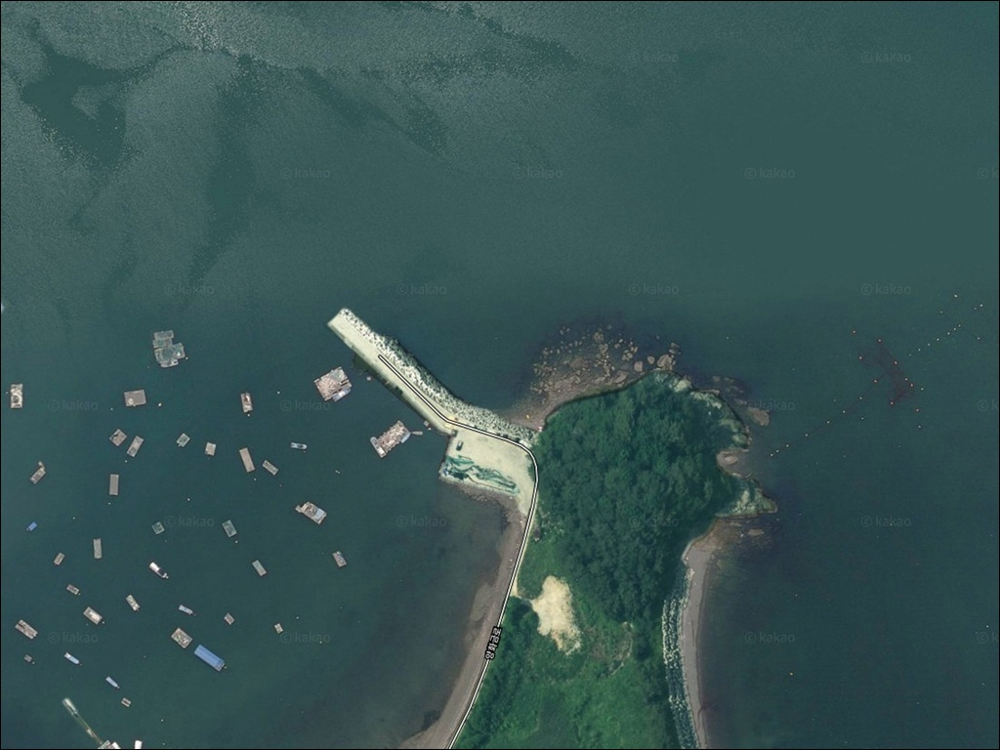
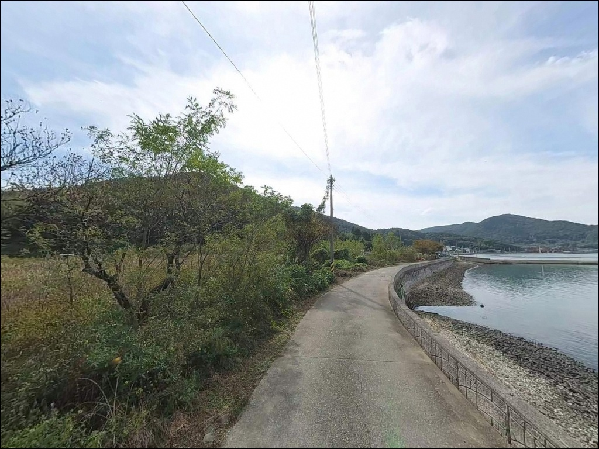
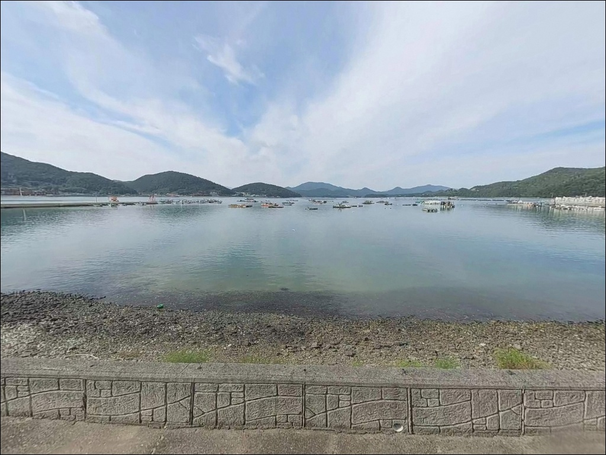
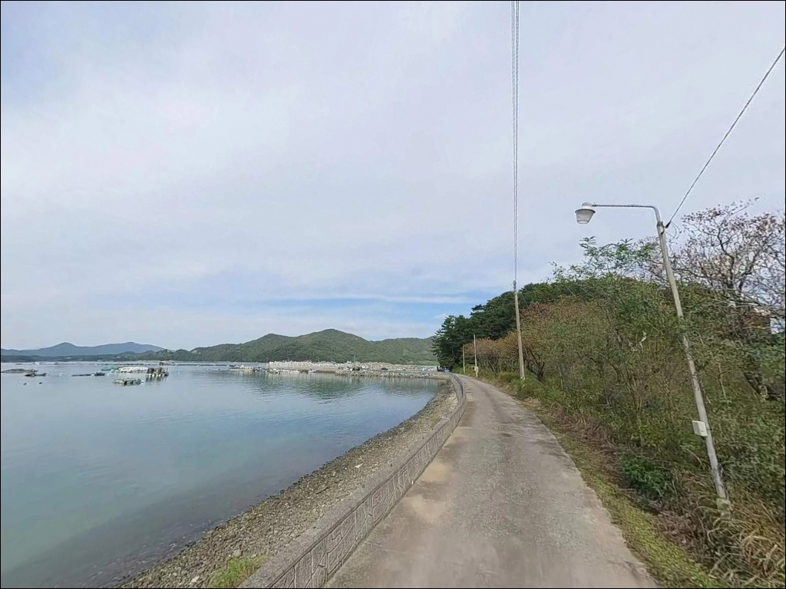
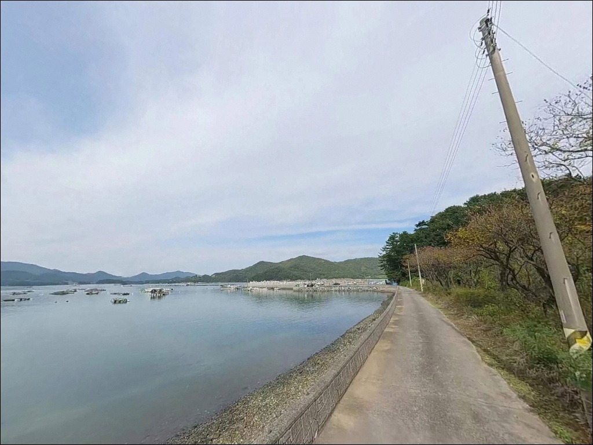
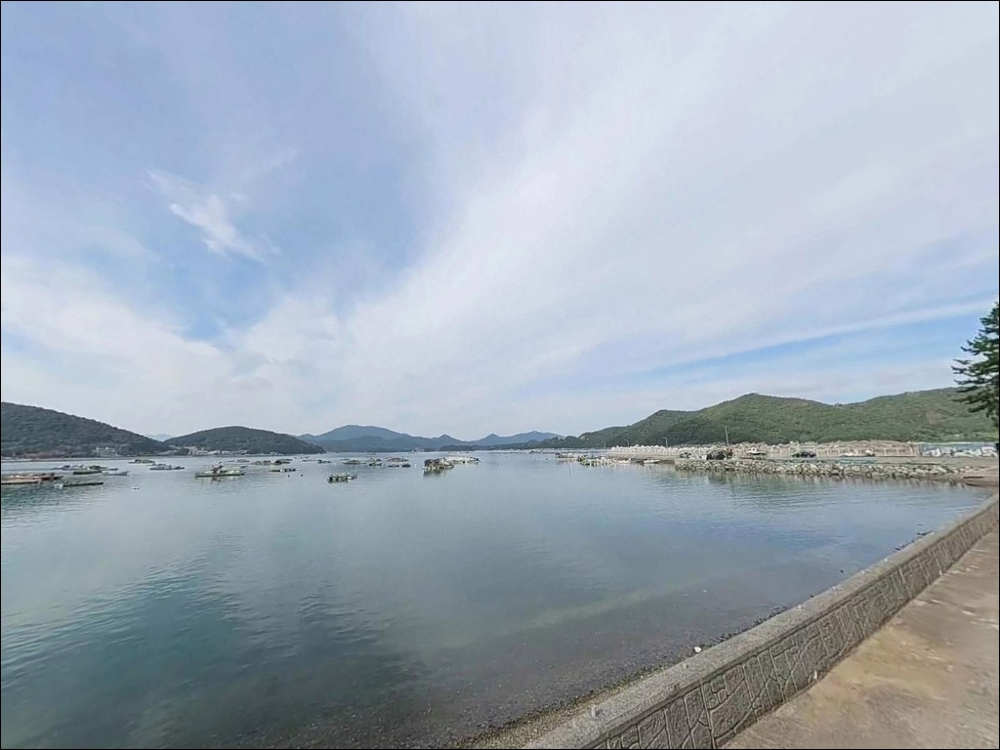
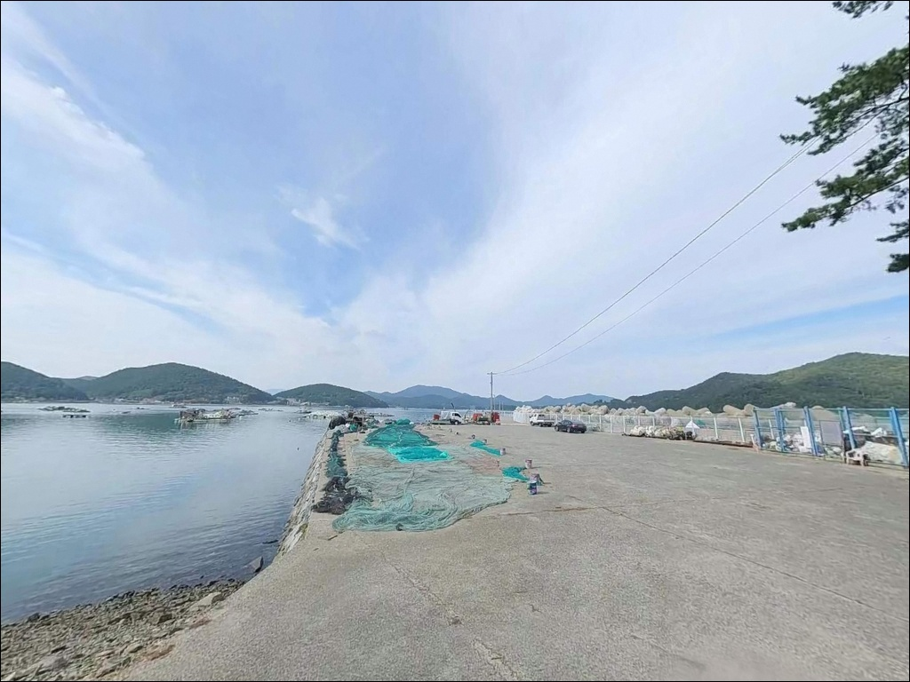
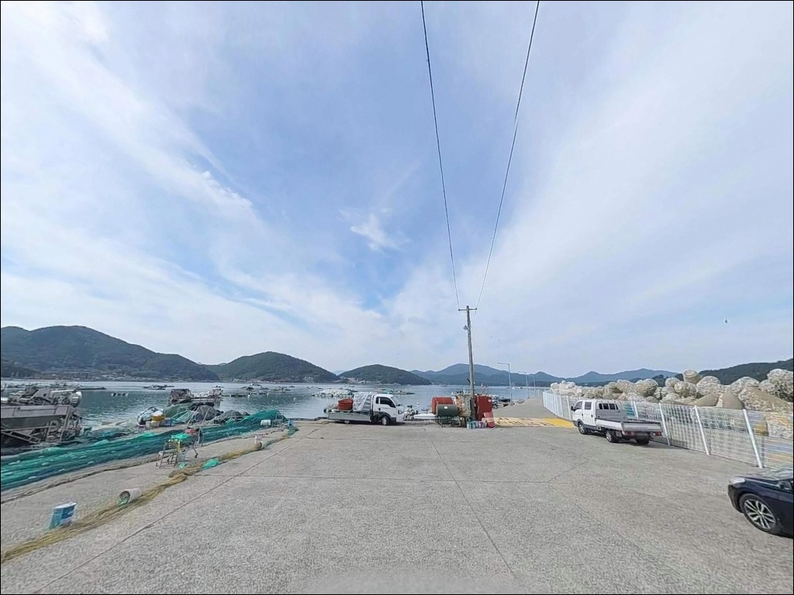
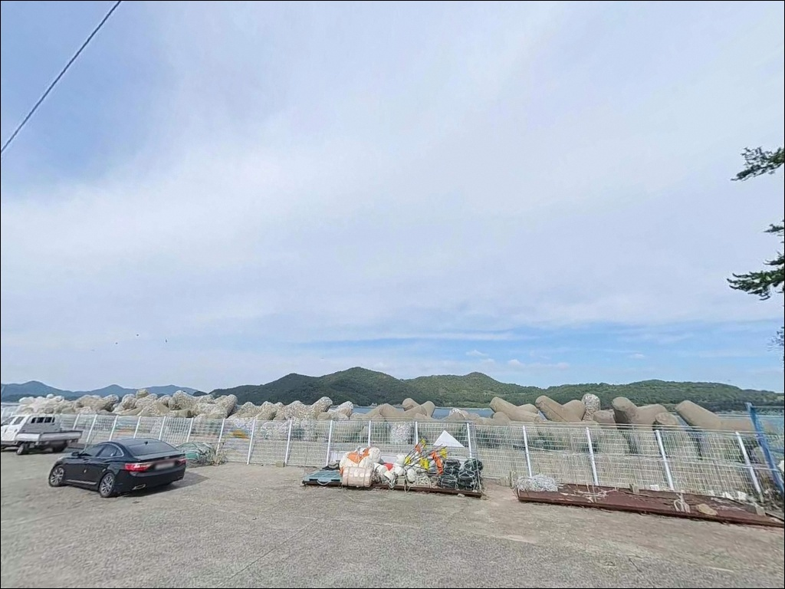

사리 때 채비 쓸려 나가던 노루목방파제, 물돌이 조금 때 들어온 입질
이 페이지에는 광고(제휴 링크 포함)가 있으며, 광고 링크를 통해 구매하면 운영자가 판매 수익 또는 수수료를 받을 수 있습니다. 포인트 사진: 카카오맵 스카이뷰·로드뷰. 이 페이지의 지도·사진 이미지는 카카오맵의 실제 서비스 이미지와 다를 수 있습니다.


포인트 안내
노루목방파제
경남 남해군 삼동면 동천리 329-4
지족해협 입구에 있는 방파제라는 사실을 모르고 가면
사리 전후 강한 조류에 어떤 채비를 써도
바닥을 잡기가 어렵습니다.
이 포인트는 물때에 따라 같은 자리에서도
낚시 가능 여부 자체가 달라지는 구조입니다.
노루목방파제는 남해도 동쪽, 지족해협 입구에 위치한
소형 방파제입니다.
외항 방향으로 테트라포트가 배치되어 있고,
방파제 우측으로 갯바위가 이어지는
복합 지형 구조를 갖추고 있습니다.
창선도와 신수도 사이 해역과 맞닿는 위치로
조류 소통이 분명한 외해형 포인트입니다.
이 글은 노루목방파제의
진입 여건, 물때 판단 기준, 낚시 스타일별 공략 조건,
차박 체류 환경에 집중합니다.
조황 단정이나 특정 어종 보장은
이 글의 범위에 포함되지 않습니다.

1. 진입 동선과 포인트 접근 여건
노루목방파제는 삼동면 동천리 해안도로에서
바로 이어지는 구조입니다.
진입로는 승용차 기준으로 통행이 가능한
포장도로이며, 급경사 비포장 구간은 없습니다.
캠핑카나 대형 SUV는 회차 공간이 좁아
방파제 도착 전 진입로를 위성지도로
미리 확인해 두는 편이 안전합니다.
방파제 초입과 선착장 주변 도로변에
소규모 평탄 주차 공간이 형성되어 있습니다.
승용차와 소형 SUV 기준으로
2~4대 수준의 여유 공간이며,
방파제 낚시 자리와 거의 맞닿아 있어
장비 이동 거리는 짧은 편입니다.
선박 작업 차량과 마을 차량 통행이
이루어지는 구조이므로,
방파제 초입부와 어선 하적 동선은 피하고
도로 가장자리 여유 공간을
주차 후보로 잡는 것이 기본입니다.

2. 차박 환경과 야간 체류 여건
노루목방파제는 동천리·금송리 해안 마을 벨트와
연결되는 생활권 포인트입니다.
어선 정박과 선착장 작업이 이루어지는 구조로
완전한 고요함을 기대하기는 어렵습니다.
다만 야간에는 차량 통행이 크게 줄어들고
조명은 가로등과 어선 작업등 수준으로
완전 암흑 환경은 아닙니다.
볼락 라이트게임을 염두에 두고 있다면
야간 가로등 환경이 오히려 유리하게 작용합니다.
차박 목적이라면 방파제 초입 공터가
주차와 체류를 동시에 해결하는 자리이지만,
공간이 협소하므로 이른 시간 선점이 필수입니다.
한려해상국립공원 권역에 해당하는지
출조 전 국립공원공단 홈페이지(knps.or.kr)에서
확인하는 것이 먼저입니다.
구역에 포함될 경우 야영·취사 방식을
달리해야 하므로 방문 전 반드시 점검해야 합니다.


3. 주변 편의시설과 인프라 현황
반경 5분 거리 지족리(삼동면 소재지)에
편의점, 낚시점, 식당이 밀집해 있습니다.
현장 도착 전 지족리에서 얼음과 낚시 소품을
보충하는 동선이 효율적입니다.
방파제 현장 바로 옆에는 별도 편의시설이 없으므로
식수와 비상용품은 출발 전 완비하는 것이 기본입니다.
항내 간이 화장실이 존재하지만
관리 상태가 일정하지 않습니다.
삼동면 소재지 시설을 이용하는 편이 낫고,
현장에서 장시간 체류한다면
개인 위생용품 지참을 권장합니다.
응급 상황 발생 시 남해읍 방면까지
거리가 있으므로
출발 전 연료와 비상약품을
넉넉하게 준비해 두는 편이 안전합니다.

4. 방문 전 반드시 챙겨야 할 준비사항
이 포인트에서 가장 먼저 확인할 것은 물때입니다.
지족해협은 남해도 전체를 통틀어
조류가 빠른 해역 중 하나로 꼽힙니다.
사리 전후에는 채비가 조류에 밀려
바닥 탐색 자체가 어려운 수준까지 강해집니다.
바다타임에서 삼동면 기준 물때를 확인하고
물돌이 직후 조금 구간을 노려
출발 시각을 맞추는 것이 기본 전략입니다.
외항 테트라포트와 갯바위에서 낚시할 경우
채비 손실이 잦은 편입니다.
여분 채비를 넉넉하게 준비하고,
이끼와 해조류로 인한 미끄럼 방지를 위해
미끄럼 방지 신발과 구명조끼는
테트라포트 진입 전 반드시 착용해야 합니다.
내항 방향은 어선 정박과 작업 구조물이
밀집해 있으므로 낚시 공간이 제한됩니다.
외항 테트라 구간과 우측 갯바위 쪽에
집중하는 것이 안전과 조과 모두에 유리합니다.
항로 인접 구간이므로 선박 통행에도
항상 주의해야 합니다.

5. 지족해협 입구가 만드는 낚시 여건
노루목방파제의 핵심은
지족해협 입구라는 위치 조건입니다.
이 해협은 죽방렴 지대로 알려진
조류가 빠른 통로이며,
방파제 외항 끝단과 테트라포트 경계 지점에서
수심이 4~9m로 급격히 변하는 구간이
형성됩니다.
바닥 지형은 모래와 여밭이 섞인 혼합 구조입니다.
방파제 상단과 선착장 인근 내항 쪽은
원투 채비가 닿기 쉬운 부드러운 바닥이며,
외항 테트라포트 주변은 암초 경계가 형성돼
볼락과 루어 대상어의 은신처 역할을 하는 구간입니다.
방파제 방향은 남동쪽 외해를 향하고 있어
동남쪽 파도와 바람 영향을 직접 받는 구조입니다.
기상 악화 시 외항 테트라와 갯바위 진입은
피하는 것이 안전합니다.
최신 조황은 출조 전 삼동면 일대 기준으로
꼭 검색해 보시기 바랍니다.


6. 노루목방파제에 어울리는 낚시 스타일
이 포인트에서 가장 잘 맞는 첫 번째 스타일은
루어낚시입니다.
외항 테트라포트 주변과 우측 갯바위 경계에서
지그헤드 웜을 활용한 볼락 라이트게임이
어울리는 구조입니다.
야간에는 가로등과 어선 조명이
집어 효과를 만들어 볼락 접근이 활발해지는 편입니다.
미노우 플러그를 활용한 농어 루어도
빠른 조류와 수심 변화를 이용해
외항 구간에서 노려볼 수 있습니다.
에깅도 이 포인트 지형에 잘 맞는 방식입니다.
가을 무늬오징어 시즌에는
외항 방향으로 에기를 원투 후
바닥층을 탐색하는 방식이 유효합니다.
물돌이 직후 조류가 잠시 누그러지는 타이밍이
에깅 채비 컨트롤에 가장 유리한 구간입니다.
릴찌낚시는 외항 테트라포트 구역에서
조류에 채비를 태워 중층~하층을
공략하는 방식으로 운용합니다.
조류가 빠른 해역인 만큼
고부력 채비 사용이 기본입니다.
감성돔과 벵에돔이 이 지형에서
기대해 볼 수 있는 어종입니다.
원투낚시는 방파제 끝단에서 외항 방향으로
멀리 투척하는 방식입니다.
모래와 여밭이 혼합된 바닥 구조에서
노래미·붕장어 계열의 입질을
기대해 볼 수 있습니다.
정조 타이밍에 바닥을 탐색하는 방식이
이 포인트 구조에 적합합니다.

7. 대안 포인트와 플랜 B 동선
노루목방파제 주차 공간이 이미 선점됐거나
조류가 너무 강한 상황이라면
둔촌방파제와 양화금방파제가
가장 가까운 대안입니다.
동일 해안선을 따라 2km 이내 거리에 있으며
해역 조류 패턴이 유사하고
루어와 원투 방식을 그대로 적용할 수 있습니다.
규모가 더 큰 포인트를 원한다면
삼동면 물건리 방향으로
이동하는 동선이 효율적입니다.
수심이 더 깊고 주차 여유가 넓은 편이라
동행 인원이 많거나 초행 방문 시
먼저 확인하고 노루목으로 내려오는 동선도
유효한 선택입니다.
차박 여건이 불편하다면
같은 삼동면 해안도로를 따라
주차 공간이 넓게 트인 구간을
먼저 확보한 뒤 낚시 자리를 정하는 방식이
현실적입니다.
지족리 방향으로 이동하면
편의시설 접근성과 주차 여유가
동시에 개선됩니다.

물돌이 타이밍을 알면
노루목방파제가 달라 보입니다
루어낚시와 에깅을 즐기는 낚시인이라면
노루목방파제의 외항 구조와
지족해협 조류가 만드는 조건이
잘 맞는 편입니다.
외항 테트라포트와 갯바위를 함께 탐색할 수 있어
한 번 방문으로 여러 자리를 점검하기 좋습니다.
반면 사리 전후 강한 물때에
찾아가거나, 차박 공간을 넉넉하게
확보하려는 목적이라면
다소 불편한 포인트입니다.
물때 확인, 외항 테트라 진입 시 안전 장비,
지족리 사전 보급, 이 세 가지를
챙기고 간다면 조용히 공략해 볼 만한
삼동면 동쪽 끝 포인트입니다.
낚시 후 차 안에서 하룻밤 머무는 차박 여행자라면
국립공원 야영 가능 여부만 미리 확인해두면
한려해상국립공원 해역을 가장 가까이에서
바라보며 보내는 하룻밤이 될 수 있는 곳입니다.